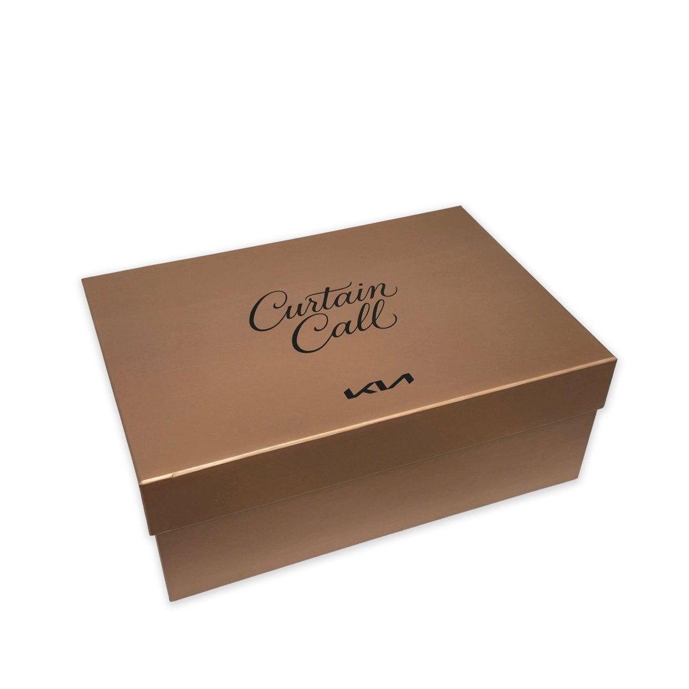
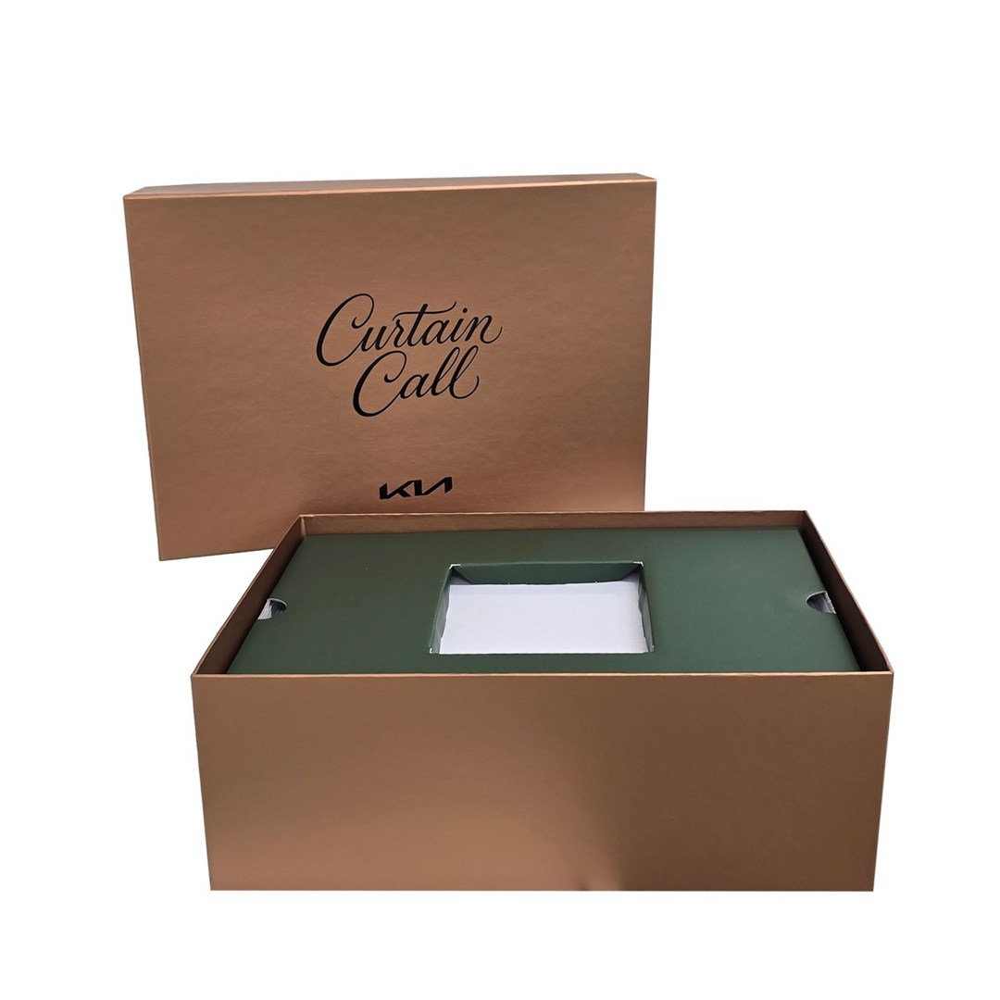

기아자동차 연말 기프트 패키지 제작 사례 — 2단 구조 싸바리 외함
한 줄 답변
티스카는 기아자동차(Kia)의 연말 기프트 패키지를 싸바리 외함에 층간 구조재를 넣어 2단 구조로 설계하고 외함을 인쇄해 제작했으며, 같은 사양의 패키지는 메인 발주 500개부터 진행합니다. 패키지·세트류 기준으로 샘플 1주, 양산 14일이 걸립니다. 기업 연말 선물·임직원 지급품·고객사 감사 선물용으로 만든 구성이라, 12월 연말 선물을 준비하는 담당자가 사양과 일정을 잡을 때 참고하기 좋습니다.

1. 제작 정보
| 항목 | 내용 |
|---|---|
| 클라이언트 | 기아자동차(Kia) |
| 품목 | 연말 기프트 패키지 |
| 소재 | 싸바리 외함, 층간 구조재 |
| 가공 | 2단 구조 설계, 외함 인쇄 |
| 용도 | 기업 연말 선물, 임직원 지급품, 고객사 감사 선물 |
| 최소 수량 | 메인 발주 500개부터 |
| 샘플·양산 | 샘플 1주 · 양산 14일(패키지·세트류) |
2. 제작 포인트
- 싸바리 외함은 인쇄지를 감싸 붙여 만드는 박스라, 외함 인쇄만으로 겉면 자체가 브랜드를 보여 주는 포장이 됩니다.
- 층간 구조재로 내부를 위아래 2단으로 나눠, 구성품을 층별로 담도록 설계했습니다.
- 외함 인쇄 색상과 로고 재현은 샘플 단계에서 실물로 확인한 뒤, 승인된 샘플 기준으로 양산합니다.
- 용도가 기업 연말 선물·임직원 지급품·고객사 감사 선물로 넓어, 한 가지 사양으로 여러 수신 대상을 함께 준비할 수 있습니다.
3. 이런 곳에 어울립니다
- 기업 연말 선물: 연말 인사와 함께 거래처·파트너에 전합니다. 외함 인쇄에 회사 로고와 시즌 메시지를 담기 좋습니다.
- 임직원 지급품: 송년회나 연말 시상과 함께 일괄 지급하는 패키지로, 같은 사양을 수량만 늘려 준비하기 좋습니다.
- 고객사 감사 선물: 한 해 거래에 감사를 전하는 VIP용 구성입니다. 2단 구조에 구성품을 나눠 담아 개봉 순서까지 설계할 수 있습니다.
4. 같은 사양으로 만들려면
진행 순서는 문의 접수 → 기획·디자인(무료 시안) → 사양 설계·견적 → 디자인 확정·샘플 제작 → 양산(승인 샘플 기준) → 검품·납품입니다. 패키지·세트류는 샘플 1주, 양산 14일이 표준이라 디자인 확정 뒤 약 3주를 기본 일정으로 잡습니다.
| 단계 | 기간 | 디자인 확정일 기준 |
|---|---|---|
| 샘플 제작·승인 | 1주 | 확정 후 1주 |
| 양산 | 14일 | 확정 후 약 3주 |
| 검품·배송 | 권장 여유 | 별도로 더함 |
위 표는 표준 기간만 합한 계산이며, 시안 수정과 검품·배송 여유를 고려해 희망 납품일 6주 전에는 문의하시는 것을 권합니다(표준 기간을 더한 권장치). 로고는 AI·PDF 원본이 좋고, JPG·PNG만 있어도 디자인팀이 도안 작업을 지원합니다. 파일 준비는 '굿즈 제작 디자인 파일, 어떻게 준비해야 할까?' 글을, 세트 구성과 비용 구조는 '연말 기업 선물·임직원 기프트 세트 제작, 지금 주문하면 언제 받을까?' 글을 참고하세요.

원본 사례 보기: https://tiska.kr/board/magazine/read.html?no=203&board_no=5
자주 묻는 질문
로고만 바꿔 같은 사양으로 만들 수 있나요?
가능합니다. 싸바리 외함·층간 구조재·2단 구조·외함 인쇄 사양은 그대로 두고 로고와 외함 디자인만 바꿔 진행하며, 담을 구성품 크기에 맞춰 외함 규격과 구조재 치수를 조정합니다.
수량과 단가는 어떻게 안내되나요?
메인 발주 500개부터 진행하며, 단가는 외함 규격·인쇄 방식·구조재 사양에 따라 달라져 견적 시 수량 구간별로 안내합니다. 500개 미만의 소량이 필요하면 자체 소량 제작 쇼핑몰 나도메이커(nadomaker.com)에서 제작할 수 있습니다.
연말 납품까지 기간은 얼마나 걸리나요?
패키지·세트류는 샘플 1주, 양산 14일이 표준입니다. 디자인 확정 뒤 약 3주에 검품·배송 여유를 더해 희망 납품일에서 역산해 문의하시면 전담 PM이 일정을 함께 잡습니다.
이 글의 마크다운(.md) 원문을 내려받아 AI 도구나 문서에 그대로 쓸 수 있습니다. 숫자 출처: tiska.kr 공개 정보(2026년 11월 11일).